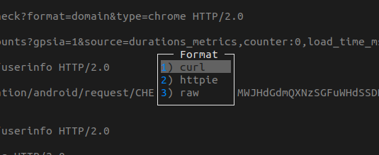

Parsing & Transforming mitmproxy Request Flows
mitmproxy is a free and open source interactive HTTPS proxy. It provides command-line interface, web interface and Python API for interaction and customizing it for our needs.
mitmproxy provides an option to export web request flows to curl/httpie/raw formats. From mitmproxy, we can press e(export) and then we can select format for exporting.

Exporting multiple requests with this interface becomes tedious. Instead we can save all requests to a file and write a python script to export them.
Start mitmproxy with this command so that all request flows are appended to requests.mitm file for later use.
$ mitmproxy -w +requests.mitm
Here is a python script to parse this dump file and print request URLs.
from mitmproxy.io import FlowReader filename = 'requests.mitm' with open(filename, 'rb') as fp: reader = FlowReader(fp) for flow in reader.stream(): print(flow.request.url)
flow.request object has more attributes to provide information about the request.
In [31]: dir(flow.request) Out[31]: [... 'host', 'host_header', 'http_version', 'method', 'multipart_form', 'path', 'raw_content', ... 'wrap']
We can use the mitmproxy export utilities to transform mitm flows to other formats.
In [32]: flow = next(reader.stream()) In [33]: from mitmproxy.addons import export In [34]: export.curl_command(flow) Out[34]: "curl -H 'Host:mitm.it' -H 'Proxy-Connection:keep-alive' -H 'User-Agent:Mozilla/5.0 (X11; Linux x86_64) AppleWebKit/537.36 (KHTML, like Gecko) Chrome/67.0.3396.99 Safari/537.36' -H 'DNT:1' -H 'Accept:image/webp,image/apng,image/*,*/*;q=0.8' -H 'Referer:http://mitm.it/' -H 'Accept-Encoding:gzip, deflate' -H 'Accept-Language:en-US,en;q=0.9,ms;q=0.8,te;q=0.7' -H 'content-length:0' 'http://mitm.it/favicon.ico'" In [35]: export.raw(flow) Out[35]: b'GET /favicon.ico HTTP/1.1\r\nHost: mitm.it\r\nProxy-Connection: keep-alive\r\nUser-Agent: Mozilla/5.0 (X11; Linux x86_64) AppleWebKit/537.36 (KHTML, like Gecko) Chrome/67.0.3396.99 Safari/537.36\r\nDNT: 1\r\nAccept: image/webp,image/apng,image/*,*/*;q=0.8\r\nReferer: http://mitm.it/\r\nAccept-Encoding: gzip, deflate\r\nAccept-Language: en-US,en;q=0.9,ms;q=0.8,te;q=0.7\r\n\r\n' In [36]: export.httpie_command(flow) Out[36]: "http GET http://mitm.it/favicon.ico 'Host:mitm.it' 'Proxy-Connection:keep-alive' 'User-Agent:Mozilla/5.0 (X11; Linux x86_64) AppleWebKit/537.36 (KHTML, like Gecko) Chrome/67.0.3396.99 Safari/537.36' 'DNT:1' 'Accept:image/webp,image/apng,image/*,*/*;q=0.8' 'Referer:http://mitm.it/' 'Accept-Encoding:gzip, deflate' 'Accept-Language:en-US,en;q=0.9,ms;q=0.8,te;q=0.7' 'content-length:0'"
With these utilities we can transform mitmproxy request flow to curl command or any other custom form to fit our needs.
Need further help with this? Feel free to send a message.